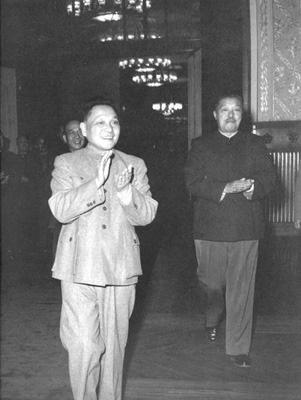

相关图片


- 

新中国成立后，邓小平领导了西南全区的政权建设、社会改造和经济恢复，不久就参加中央领导工作，先后担任中共中央秘书长、中共中央政治局委员。在党的八届一中全会上，他当选为中共中央政治局常务委员会委员、中央书记处总书记，成为以毛泽东为核心的党的第一代中央领导集体的重要成员，为党的建设的加强和改进，作出了重大贡献。“文革后担任中共中央副主席、中华人民共和国国务院副总理、中国共产党中央军事委员会副主席、中国人民解放军总参谋长，主持党、国家和军队的日常工作。不久，由于同“四人帮”进行针锋相对的斗争，他再次被错误地撤职、批判。
拨乱反正粉碎“四人帮”、结束“文化大革命”后，邓小平再度恢复工作后从端正思想路线入手进行拨乱反正，强调实事求是是毛泽东思想的精髓，旗帜鲜明地反对“两个凡是”的错误观点，支持和领导开展真理标准问题的讨论。1978年12月召开的中共十一届三中全会，开辟了中国改革开放和集中力量进行社会主义现代化建设的新时期。
邓小平作了“解放思想，实事求是，团结一致向前看”的报告，强调解放思想是一个重大政治问题，要打破林彪、“四人帮”大搞禁区、禁令，制造迷信的僵化状态，把人们的思想从假马克思主义的禁锢下解放出来。
他第一次提出了“为了保障人民民主，必须加强法制，必须使民主制度化、法律化，使制度和法律不因领导人的改变而改变，不因领导人的看法和注意力的改变而改变”的观点，提出了要允许一部分地区、一部分企业、一部分工人农民先富起来，以带动其他地区、其他企业、其他人，使全国人民都能比较快地富裕起来的观点。
在邓小平的主导下，十一届三中全会抛弃了“以阶级斗争为纲”的错误路线，确定了全党工作重点和全国人民的注意力转移到社会主义现代化建设上来的政治路线，对经济管理体制和经营管理方法应着手认真地改革，认真解决党政不分、政企不分、以党代政、以政代企的现象，实行分级分工分人负责等。
改革开放
中共十一届三中全会以后，他坚持解放思想、实事求是，创立和发展了建设有中国特色的社会主义理论。这一理论科学地阐明社会主义本质，第一次比较系统地回答了中国这样经济文化落后的国家如何建设社会主义，如何巩固和发展社会主义的一系列基本问题。他认为中国处于社会主义初级阶段，一切要从这个实际出发来制订规划。根据他的思想，中共十三大制定了党在社会主义初级阶段的以经济建设为中心，坚持四项基本原则，坚持改革开放的基本路线。他指出，社会主义根本任务是发展生产力。全党要一心一意地搞现代化建设。实现现代化，关键是科学技术现代化。科学技术是第一生产力。教育是一个民族最根本的事业。他设计了从20世纪80年代到下个世纪中叶分三步走基本实现现代化的发展战略目标。并且提出，一切以是否有利于发展社会主义社会的生产力、是否有利于增强社会主义国家的综合国力、是否有利于提高人民的生活水平为根本标准，不断开拓新局面。他大力支持和推动农村改革，推进以城市为中心的全面改革，指出“改革是中国第二次革命”。他关于社会主义也可以搞市场经济的论述，为中国共产党确定建立社会主义市场经济的体制的改革目标奠定了理论基础。他倡议兴办经济特区，开放14个沿海城市，开发开放上海浦东新区，推动中国全面对外开放格局的形成。他积极推进政治体制改革，强调发展社会主义民主，健全社会主义法制，在建设物质文明的同时，高度重视精神文明建设。
一国两制
他为解决香港、澳门、台湾问题，实现祖国和平统一，倾注了大量心血。他从实际出发创造性地提出“一个中国，两种制度”的构想。在他的主持下，中国同美国建立了外交关系，同日本缔结了中日和平友好条约，恢复了中苏两党两国的关系，发展了同周边国家和第三世界国家的友好关系。他为打开中国外交新局面，争取有利的国际环境来进行现代化建设，维护世界和平，作出了不懈的努力。
带头退休1989年11月在中共十三届五中全会上，他辞去了最后担任的中央军委主席职务。在以他为核心的第二代中央领导集体向以江泽民为核心的第三代中央领导集体顺利过渡、保持党和国家稳定的过程中，他起了关键的作用。
南方讲话退休以后，他仍然关心党和国家的事业。1992年视察中国南方的武昌、深圳、珠海、上海等地，发表重要谈话，总结改革开放以来的基本经验，从理论上回答了一些重大问题，中国的改革开放和现代化建设进入了一个新阶段。
人物理论1997年召开的中共第十五次全国代表大会，将建设有中国特色社会主义理论概括为邓小平理论，指出邓小平理论是当代中国的马克思主义，是马克思主义在中国发展的新阶段，并在党章中明确规定，中国共产党以马克思列宁主义、毛泽东思想、邓小平理论作为行动指南。
邓小平理论是马克思主义基本原理同当代中国实践和时代特征相结合的产物，是毛泽东思想在新的历史条件下的继承和发展。邓小平理论围绕什么是社会主义、怎样建设社会主义的基本的理论问题，在社会主义发展道路、发展阶段、根本任务、发展动力、外部条件、政治保证、战略步骤、领导力量和依靠力量以及祖国统一等重大问题上，形成一系列相互联系的基本观点，第一次比较系统地初步回答了中国的经济文化比较落后的国家如何建设、巩固和发展社会主义的一系列基本问题。